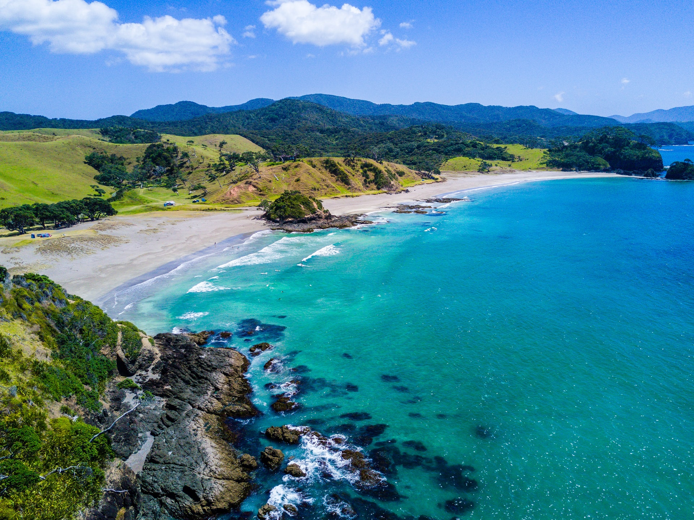
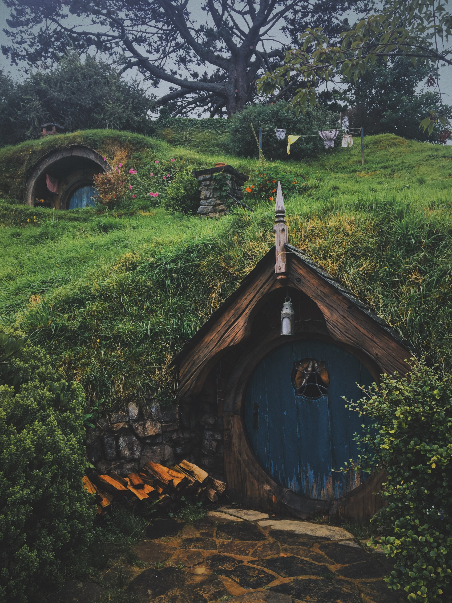
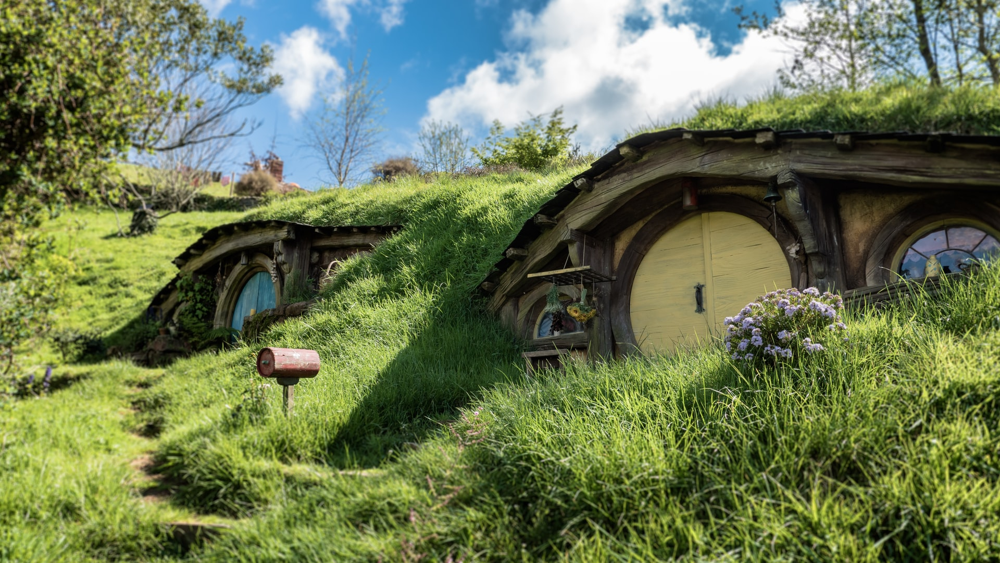

New Zealand
New Zealand is another place I'd really like to visit. It looks like a beautiful country, and I'd love to explore it someday. New Zealand's population is 4.5 million.
A big reason I want to travel to new Zealand is because that's where the set of Hobbiton is from one of my favorite movie series, Lord of the Rings. When I found out where those scenes were filmed, I have always wanted to visit.
New Zealand consists of two main islands, The North Island and the South Island. Surrounding these are aroundf 600 smller islands, covering a total aera of about 103,000 square miles.
  